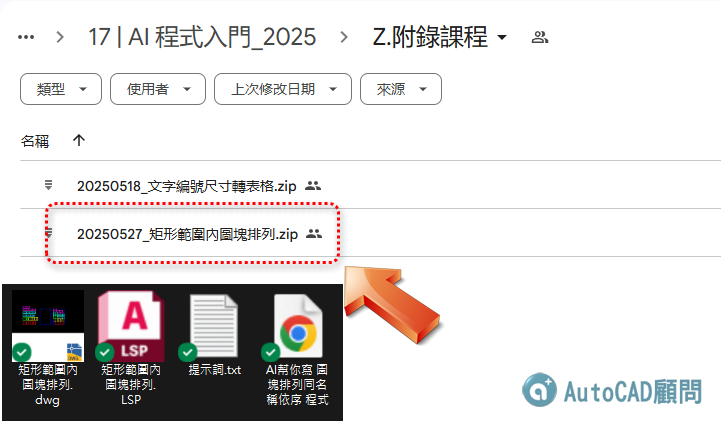

AutoCAD AI幫你寫 圖塊排列同名稱依序 程式
https://www.youtube.com/shorts/oR3NMMtvNSo
如果您想要【AI提示詞】自己試試讓 AI 寫
可以到FB粉絲專頁留言【我想要AI提示詞】
https://www.facebook.com/share/p/1AasBnjbmy/
👇詳解技巧可參考AI入門課程教學(多多練習)
https://autocad-tw.1shop.tw/8rvgjj
👇有參加 AI入門課程 請前往下載 新增附錄課程
*【20250527_矩形範圍內圖塊排列】有提供 程式碼、dwg檔 及 提示詞*
